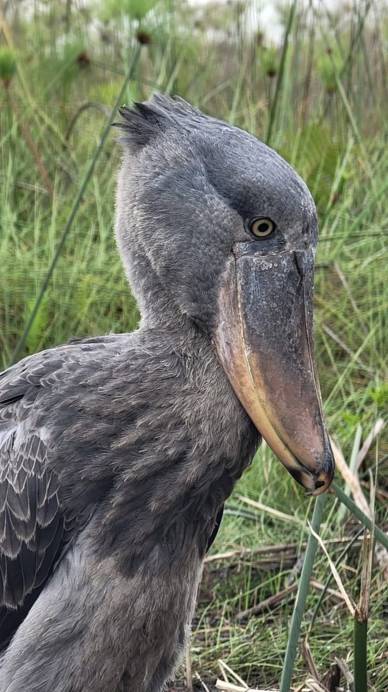

Quiet canoe trips through Mabamba Swamp with passionate local guides. Search for the magnificent shoebill, photograph rare birds and enjoy authentic Ugandan nature.
Search for the shoebill in its natural wetland home at Mabamba Swamp.
Explore Uganda's wetlands, lakes and forests with local guides.
Quiet canoes and expert positioning bring you close for great shots.
Glide through papyrus channels and Lake Victoria scenery.
With its enormous shoe-shaped bill, tall body and almost prehistoric look, the shoebill is one of the most unusual birds in the world. It is more closely related to pelicans than to storks, and its huge, sharp-edged bill can handle surprisingly large fish.
It can stand completely still among the papyrus for long periods, then strike with astonishing speed. That calm stillness gives you time to watch and photograph it properly. Seeing one at Mabamba is a special moment, and it is exactly what we take our guests out to find.

Tell us your date and group size and we will confirm your canoe.
Book your tour